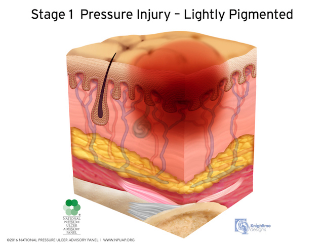
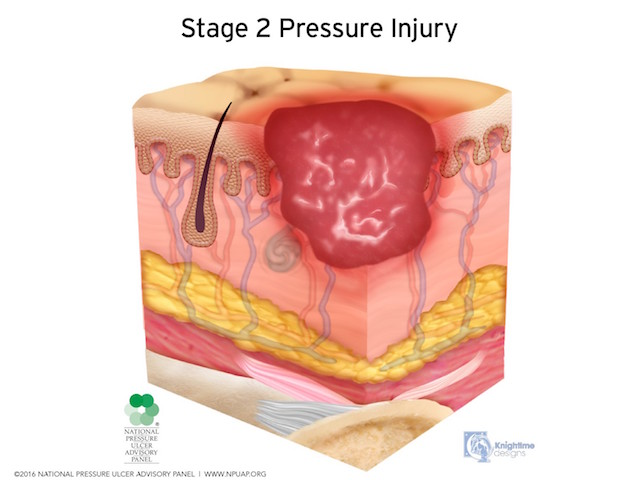
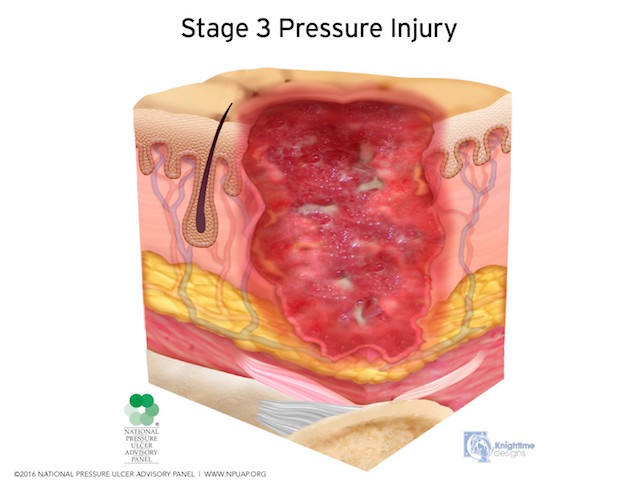
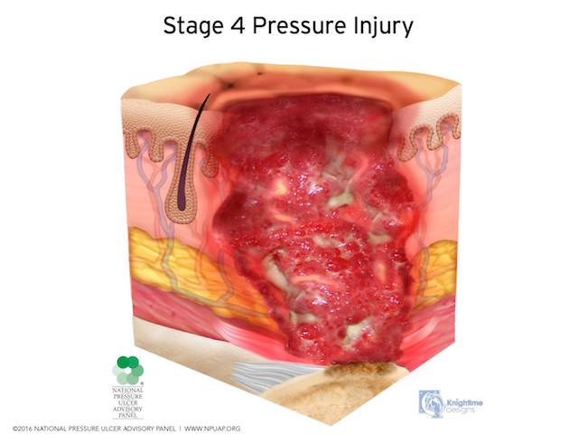
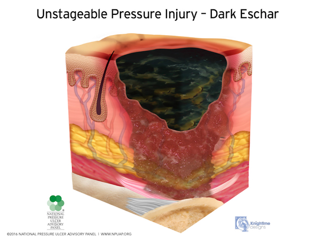
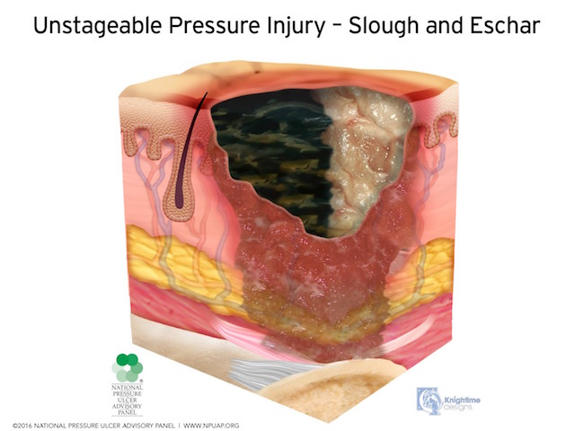
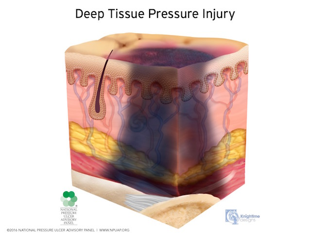

Stage 1 Pressure Injury
Intact skin with a localized area of non-blanchable erythema, which may appear differently in darkly pigmented skin. Presence of blanchable erythema or changes in sensation, temperature, or firmness may precede visual changes. Color changes do not include purple or maroon discoloration; these may indicate deep tissue pressure injury.
Definitions and images from NPUAP.org
Stage 2 Pressure Injury
Partial-thickness loss of skin with exposed dermis. The wound bed is viable, pink or red, moist, and may also present as an intact or ruptured serum-filled blister. Adipose (fat) is not visible and deeper tissues are not visible. Granulation tissue, slough and eschar are not present. These injuries commonly result from adverse microclimate and shear in the skin over the pelvis and shear in the heel. This stage should not be used to describe moisture associated skin damage (MASD) including incontinence associated dermatitis (IAD), intertriginous dermatitis (ITD), medical adhesive related skin injury (MARSI), or traumatic wounds (skin tears, burns, abrasions).
Definitions and images from NPUAP.org
Stage 3 Pressure Injury
Full-thickness loss of skin, in which adipose (fat) is visible in the ulcer and granulation tissue and epibole (rolled wound edges) are often present. Slough and/or eschar may be visible. The depth of tissue damage varies by anatomical location; areas of significant adiposity can develop deep wounds. Undermining and tunneling may occur. Fascia, muscle, tendon, ligament, cartilage and/or bone are not exposed. If slough or eschar obscures the extent of tissue loss this is an Unstageable Pressure Injury.
Definitions and images from NPUAP.org
Stage 4 Pressure Injury
Full-thickness skin and tissue loss with exposed or directly palpable fascia, muscle, tendon, ligament, cartilage or bone in the ulcer. Slough and/or eschar may be visible. Epibole (rolled edges), undermining and/or tunneling often occur. Depth varies by anatomical location. If slough or eschar obscures the extent of tissue loss this is an Unstageable Pressure Injury.
Definitions and images from NPUAP.org
Unstageable Pressure Injury
Full-thickness skin and tissue loss in which the extent of tissue damage within the ulcer cannot be confirmed because it is obscured by slough or eschar. If slough or eschar is removed, a Stage 3 or Stage 4 pressure injury will be revealed. Stable eschar (i.e. dry, adherent, intact without erythema or fluctuance) on the heel or ischemic limb should not be softened or removed.
 Definitions and images from NPUAP.org
Deep Tissue Pressure Injury
Intact or non-intact skin with localized area of persistent non-blanchable deep red, maroon, purple discoloration or epidermal separation revealing a dark wound bed or blood filled blister. Pain and temperature change often precede skin color changes. Discoloration may appear differently in darkly pigmented skin. This injury results from intense and/or prolonged pressure and shear forces at the bone-muscle interface. The wound may evolve rapidly to reveal the actual extent of tissue injury, or may resolve without tissue loss. If necrotic tissue, subcutaneous tissue, granulation tissue, fascia, muscle or other underlying structures are visible, this indicates a full thickness pressure injury (Unstageable, Stage 3 or Stage 4). Do not use DTPI to describe vascular, traumatic, neuropathic, or dermatologic conditions.
Definitions and images from NPUAP.org